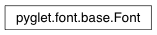

Font Class¶
-
class
Font¶ Abstract font class able to produce glyphs.
To construct a font, use pyglet.font.load, which will instantiate the platform-specific font class.
Internally, this class is used by the platform classes to manage the set of textures into which glyphs are written.
Variables: Methods:
add_font_data(data)Add font data to the font loader. have_font(name)Determine if a font with the given name is installed. Attributes:
Methods¶
-
classmethod
Font.add_font_data(data)¶ Add font data to the font loader.
This is a class method and affects all fonts loaded. Data must be some byte string of data, for example, the contents of a TrueType font file. Subclasses can override this method to add the font data into the font registry.
There is no way to instantiate a font given the data directly, you must use pyglet.font.load specifying the font name.
-
classmethod
Font.have_font(name)¶ Determine if a font with the given name is installed.
Parameters: name (str) – Name of a font to search for Return type: bool